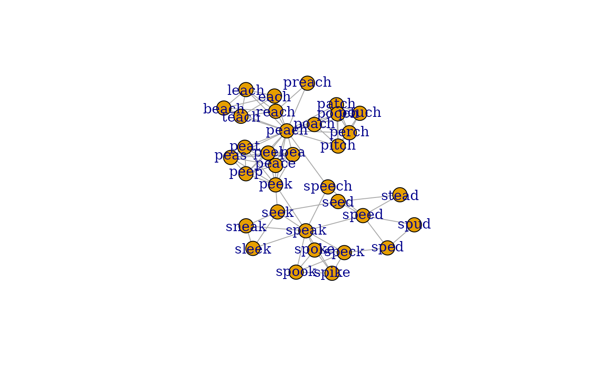
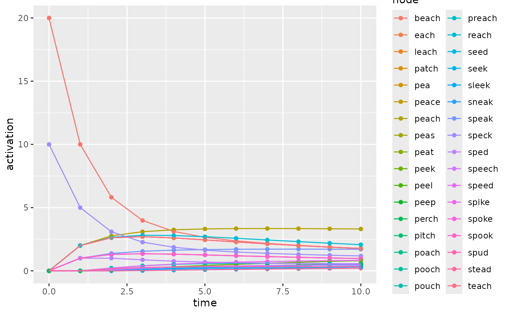
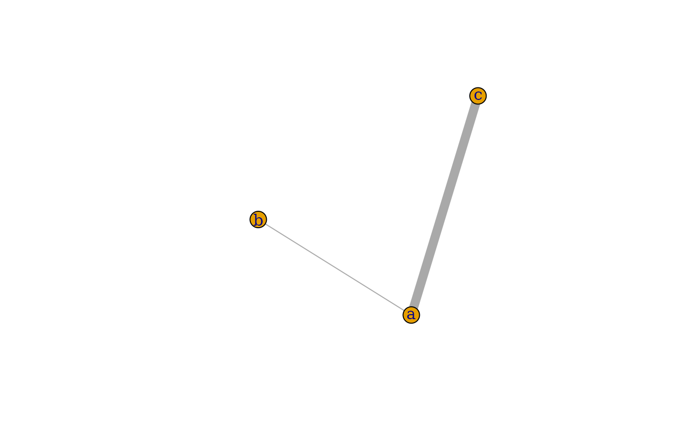
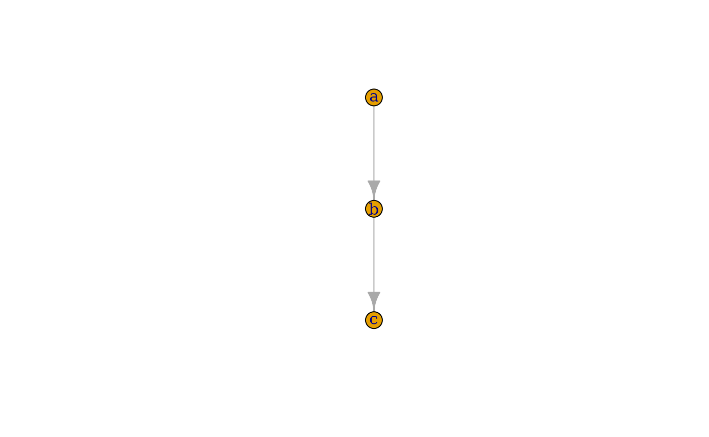

spreadr: A R package to simulate spreading activation in a network
Cynthia S. Q. Siew
2026-05-27
spreadr_vignette.RmdIntroduction
The notion of spreading activation is a prevalent metaphor in the
cognitive sciences; however, the tools to implement spreading activation
in a computational simulation are not as readily available. This
vignette introduces the spreadr R package (pronunced ‘SPREAD-er’), which
can implement spreading activation within a specified network structure.
The algorithmic method implemented in the spreadr function
follows the approach described in Vitevitch et
al. (2011), who viewed activation as a fixed cognitive resource
that could “spread” among connected nodes in a network.
Installation
You can choose to install the stable version from CRAN, or the development build from GitHub.
Stable (CRAN)
install.packages("spreadr")If you encounter any bugs or issues, please try the development build first. The bug or issue may have already been fixed on GitHub, but not yet propagated onto CRAN.
Development (GitHub)
install.packages("remotes")
remotes::install_github("csqsiew/spreadr")If you encounter any bugs or issues, please try the development build first. The bug or issue may have already been fixed on GitHub, but not yet propagated onto CRAN.
Example with a phonological network
In this example, we will simulate spreading activation in a small sample portion of a phonological network (Chan and Vitevitch 2009) which is automatically loaded with spreadr. This phonological network is unweighted and undirected, but spreadr supports weighted and directed graphs as well. This makes it is possible to simulate spreading activation in a weighted network where more activation is passed between nodes that have “stronger” edges, or in a directed (asymmetric) network where activation can pass from node i to node j but not necessarily from node j to node i.
You may substitute any network in place of this example one.
Describe the network
The network for spreading activation must be either an
igraph object or an adjacency matrix.
Using an igraph object
pnet, an igraph object with named vertices
representing our sample phonological network is automatically loaded
with the spreadr library.
plot(pnet)## This graph was created by an old(er) igraph version.
## ℹ Call `igraph::upgrade_graph()` on it to use with the current igraph version.
## For now we convert it on the fly...
Don’t worry if your plot does not look exactly as above. The layout of the nodes is determined stochastically.
Using an adjacency matrix
pnetm, an named adjacency matrix representing our sample
phonological network is automatically loaded with the spreadr
library.
library(spreadr)
library(igraph)
set.seed(1)
data("pnetm")
pnetm[1:5, 1:5] # inspect the first few entries## spike speak spoke speck spook
## spike 0 1 1 1 1
## speak 1 0 1 1 1
## spoke 1 1 0 1 1
## speck 1 1 1 0 1
## spook 1 1 1 1 0
plot(graph_from_adjacency_matrix(
pnetm, mode="undirected")) # visualise the graphFor those following along: don’t worry if your plot does not look exactly as above. The layout of the nodes is determined stochastically.
For simplicity, the rest of this example will use pnet,
an igraph representation of pnetm. This
difference is trivial — the spreadr function accepts both igraph and
adjacency matrix.
Specify the adding of activation
A simulation of spreading activation is uninteresting without some activation to spread. In the simplest case, you may specify the initial activation state of each node, from which the simulation will proceed. Alternatively, you can also specify the addition of activation at any node, at any time point within the simulation.
Initial activation only
Initial activation is specified by a data.frame (or
data.frame-like object, such as a tibble) with
columns node and activation. Each row
represents the addition of activation amount of activation
to the node with name node, at the initial pre-spreading
activation step of the simulation.
For example, if we wanted the nodes "beach" and
"speck" to have 20 and 10
activation initially, respectively:
start_run <- data.frame(
node= c("beach", "speck"),
activation=c( 20, 10))Activation at specified time points
The adding of activation at specified time points is specified by a
data.frame (or data.frame-like object, such as
a tibble) with columns node,
activation, and time. Each row represents the
addition of activation amount of activation to the node
with name node at time point time. The initial
state before any spreading activation occurs is
time = 0.
Therefore, if we wanted the node "beach" to have
20 activation initially, then "speck" to have
10 activation at time = 5:
start_run <- data.frame(
node = c("beach", "speck"),
activation = c( 20, 10),
time = c( 0, 5))For more details about the meaning of time in the
spreading activation simulation, please read the spreadr
function documentation. To keep things simple, the rest of this example
will use the version of start_run without the
time column (see the leftmost tab).
Run the simulation
We are now ready to run the simulation through the
spreadr function. This function takes a number of
parameters, some of which are listed here. Required parameters are
written in bold, optional parameters are written with
their default values (in brackets):
-
network: Adjacency matrix or
igraphobject representing the network in which to simulate spreading activation -
start_run: Non-empty
data.framedescribing the addition of activation into the network. -
decay (
0): Proportion of activation lost at each time step (range from 0 to 1) -
retention (
0.5): Proportion of activation retained in the originator node (range from 0 to 1) -
suppress (
0): Nodes with activation values lower than this value will have their activations forced to0(typically this will be a very small value e.g. < 0.001) -
time (
10): Number of iterations in the simulation -
include_t0 (
FALSE): If the initial state activations should be included in the resultdata.frame
For more details on all the possible function parameters, please read
the spreadr function documentation. For more details on the
spreading activation algorithm, see Siew
(2019) and Vitevitch et al.
(2011).
result <- spreadr(pnet, start_run, include_t0=TRUE)Examine the results
The result is presented as a data.frame with columns
node, activation, and time. Each
row contains the activation value of a node at its specified time
step.
head(result) # inspect the first few rows## node activation time
## 1 spike 0 0
## 2 speak 0 0
## 3 spoke 0 0
## 4 speck 10 0
## 5 spook 0 0
## 6 sped 0 0
tail(result) # inspect the last few rows## node activation time
## 369 patch 0.5139104 10
## 370 pooch 0.5139104 10
## 371 poach 0.5139104 10
## 372 preach 0.5493873 10
## 373 reach 2.0688303 10
## 374 perch 0.5139104 10As a data.frame, the result can be easily
saved as a CSV file for sharing.
write.csv(result, file="result.csv") # save result as CSV fileYou can also easily visualise the result using your
favourite graphical libraries. Here, we use ggplot2:

Additional examples
Here, we address some common “how do I do X?” questions by example.
Using a weighted network
Simply pass a weighted network (igraph object or
adjacency matrix) to the spreadr function.
Let’s take a simple three-node network as example:
weighted_network <- matrix(
c(0, 1, 9,
1, 0, 0,
9, 0, 0), nrow=3, byrow=TRUE)
colnames(weighted_network) <- c("a", "b", "c")
rownames(weighted_network) <- c("a", "b", "c")
# To visualise the network only --- this is not necessary for spreadr
weighted_igraph <- graph_from_adjacency_matrix(
weighted_network, mode="undirected", weighted=TRUE)
plot(weighted_igraph, edge.width=E(weighted_igraph)$weight)
If we let the node "a" have initial
activation = 10, we should expect to see 9 units of
activation go to "c", and 1 unit to "b", for
retention = 0.
spreadr(
weighted_igraph, data.frame(node="a", activation=10),
time=1, retention=0, include_t0=TRUE)## node activation time
## 1 a 10 0
## 2 b 0 0
## 3 c 0 0
## 4 a 0 1
## 5 b 1 1
## 6 c 9 1Using a directed network
Simply pass a directed network (igraph object or
adjacency matrix) to the spreadr function.
Let’s take a simple three-node network as example:
directed_network <- matrix(
c(0, 1, 0,
0, 0, 1,
0, 0, 0), nrow=3, byrow=TRUE)
colnames(directed_network) <- c("a", "b", "c")
rownames(directed_network) <- c("a", "b", "c")
# To visualise the network only --- this is not necessary for spreadr
directed_igraph <- graph_from_adjacency_matrix(
directed_network, mode="directed")
plot(directed_igraph, edge.width=E(directed_igraph)$weight)
If we let the node "b" have initial
activation = 10, we should expect to see all 10 units of
activation go to "c", and none go to "a", for
retention = 0.
spreadr(
directed_igraph, data.frame(node="b", activation=10),
time=1, retention=0, include_t0=TRUE)## node activation time
## 1 a 0 0
## 2 b 10 0
## 3 c 0 0
## 4 a 0 1
## 5 b 0 1
## 6 c 10 1Repeating the simulation across different parameters
There are a few ways to do this, but here we will showcase a
relatively simple method using data.frames.
Suppose we want to simulate spreading activation across four
different parameter sets of (retention, decay): (0, 0), (0.5,
0), (0, 0.5), and (0.5, 0.5). We would first record down all those
parameters which will differ into a data.frame:
params <- data.frame(
retention=c(0, 0.5, 0, 0.5),
decay= c(0, 0, 0.5, 0.5))Then, we prepare the common parameters that will not differ.
network <- matrix(
c(0, 1,
0, 0), nrow=2, byrow=TRUE)
start_run <- data.frame(node=1, activation=10)Now, to run the simulate once for each set of different parameters,
we simply apply over the rows of params.
apply(params, 1, function(row)
spreadr(
network, start_run,
time=2, include_t0=TRUE,
retention=row[1], decay=row[2]))## [[1]]
## node activation time
## 1 1 10 0
## 2 2 0 0
## 3 1 0 1
## 4 2 10 1
## 5 1 0 2
## 6 2 10 2
##
## [[2]]
## node activation time
## 1 1 10.0 0
## 2 2 0.0 0
## 3 1 5.0 1
## 4 2 5.0 1
## 5 1 2.5 2
## 6 2 7.5 2
##
## [[3]]
## node activation time
## 1 1 10.0 0
## 2 2 0.0 0
## 3 1 0.0 1
## 4 2 5.0 1
## 5 1 0.0 2
## 6 2 2.5 2
##
## [[4]]
## node activation time
## 1 1 10.000 0
## 2 2 0.000 0
## 3 1 2.500 1
## 4 2 2.500 1
## 5 1 0.625 2
## 6 2 1.875 2Reporting bugs or issues
First, please check that you are on the development build. This is because the development build contains a more up-to-date version of spreadr, which may include various bug fixes, as compared to the stable CRAN build.
If your problems persist, please report them on our Github repository.
Session Info
## R version 4.6.0 (2026-04-24)
## Platform: x86_64-pc-linux-gnu
## Running under: Ubuntu 24.04.4 LTS
##
## Matrix products: default
## BLAS: /usr/lib/x86_64-linux-gnu/openblas-pthread/libblas.so.3
## LAPACK: /usr/lib/x86_64-linux-gnu/openblas-pthread/libopenblasp-r0.3.26.so; LAPACK version 3.12.0
##
## locale:
## [1] LC_CTYPE=C.UTF-8 LC_NUMERIC=C LC_TIME=C.UTF-8
## [4] LC_COLLATE=C.UTF-8 LC_MONETARY=C.UTF-8 LC_MESSAGES=C.UTF-8
## [7] LC_PAPER=C.UTF-8 LC_NAME=C LC_ADDRESS=C
## [10] LC_TELEPHONE=C LC_MEASUREMENT=C.UTF-8 LC_IDENTIFICATION=C
##
## time zone: UTC
## tzcode source: system (glibc)
##
## attached base packages:
## [1] stats graphics grDevices utils datasets methods base
##
## other attached packages:
## [1] ggplot2_4.0.3 igraph_2.3.1 spreadr_0.3.0 Rcpp_1.1.1-1.1
##
## loaded via a namespace (and not attached):
## [1] Matrix_1.7-5 gtable_0.3.6 jsonlite_2.0.0 dplyr_1.2.1
## [5] compiler_4.6.0 tidyselect_1.2.1 assertthat_0.2.1 jquerylib_0.1.4
## [9] systemfonts_1.3.2 scales_1.4.0 textshaping_1.0.5 yaml_2.3.12
## [13] fastmap_1.2.0 lattice_0.22-9 R6_2.6.1 labeling_0.4.3
## [17] generics_0.1.4 knitr_1.51 tibble_3.3.1 desc_1.4.3
## [21] bslib_0.11.0 pillar_1.11.1 RColorBrewer_1.1-3 rlang_1.2.0
## [25] cachem_1.1.0 xfun_0.57 fs_2.1.0 sass_0.4.10
## [29] S7_0.2.2 cli_3.6.6 withr_3.0.2 pkgdown_2.2.0
## [33] magrittr_2.0.5 digest_0.6.39 grid_4.6.0 lifecycle_1.0.5
## [37] vctrs_0.7.3 evaluate_1.0.5 glue_1.8.1 farver_2.1.2
## [41] ragg_1.5.2 rmarkdown_2.31 tools_4.6.0 pkgconfig_2.0.3
## [45] htmltools_0.5.9